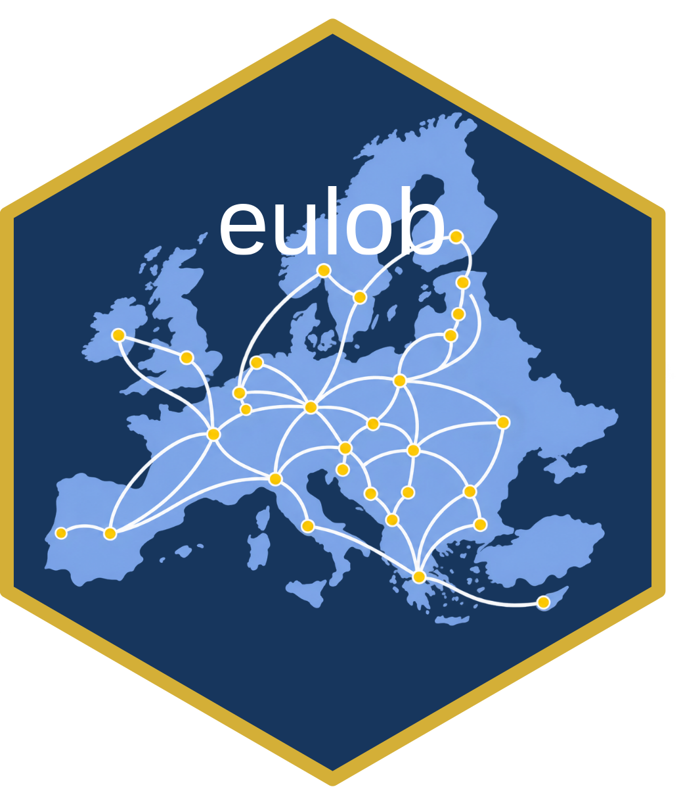

Getting Started with eulob
getting-started.RmdIntroduction
eulob provides offline access to
EU-LOB, a catalogue of names and registration entries
collected from European lobbying and transparency registers. The package
allows researchers to explore register coverage, search recorded
organization names, retrieve individual entries, and examine names
appearing across different registers.
The catalogue currently covers 19 territorial scopes and 21
registers, including the EU Transparency Register. The
territorial code UE identifies the supranational EU
register.
This guide follows a practical example using Microsoft, whose name appears in several European lobbying registers. We begin by exploring the catalogue, then search for recorded names, examine individual registrations, and compare results across registers.
Installation and first steps
The development version of eulob is publicly available
on GitHub:
install.packages("remotes")
remotes::install_github(
"AritzUMA/eulob",
build = FALSE,
upgrade = "never"
)Load the package and check the installed version:
library(eulob)
eulob_version()#> [1] '0.2.1.9000'The package includes its catalogue locally, so ordinary queries do not require an internet connection.
Explore the catalogue
Before searching for organizations, we can inspect the territorial and institutional coverage of EU-LOB.
The functions eulob_countries() and
eulob_registers() provide an overview of the available
territories and registers. For example, Italy has several registers
included in the catalogue:
italian_registers <- eulob_registers(country = "IT")
knitr::kable(
italian_registers[, c("register", "n_names", "n_entities")],
caption = "Lobbying registers represented in Italy"
)| register | n_names | n_entities |
|---|---|---|
| Camera dei Deputati | 455 | 455 |
| Italian MIMIT Register | 754 | 752 |
| Tuscany Interest Groups Register | 139 | 139 |
The n_names column counts distinct normalized-name
identifiers, whereas n_entities counts distinct
register-entry identifiers. Neither measure should be interpreted as a
verified count of unique legal organizations.
To retrieve the names and identifiers recorded in a particular
territorial scope, use eulob_lobbies(). For example, we can
inspect the Microsoft entry in the Belgian catalogue:
belgian_entries <- eulob_lobbies(country = "BE")
belgian_microsoft <- belgian_entries[
grepl("Microsoft", belgian_entries$name, ignore.case = TRUE),
c("name", "country", "register"),
drop = FALSE
]
knitr::kable(
belgian_microsoft,
caption = "Microsoft entries recorded in Belgium"
)| name | country | register | |
|---|---|---|---|
| 122 | Microsoft | BE | Belgian Chamber Lobby Register |
The related function eulob_sources() can also be used to
filter the register inventory and select its available columns.
Search for Microsoft
One of the main features of eulob is the ability to
search recorded organization names across European lobbying
registers.
By default, eulob_search() uses cosine similarity over
character bigrams. This allows a search to retrieve names that are not
identical to the query.
We can search for Microsoft using a minimum lexical similarity of 0.50:
microsoft <- eulob_search(
"Microsoft",
method = "cosine",
min_similarity = 0.50,
limit = 15
)
knitr::kable(
microsoft[, c("name", "country", "register", "similarity")],
digits = 3,
caption = "Names matching Microsoft across European registers"
)| name | country | register | similarity |
|---|---|---|---|
| Microsoft | BE | Belgian Chamber Lobby Register | 1.000 |
| Microsoft | EE | Estonian Lobby Meetings | 1.000 |
| Microsoft Oy | FI | Finnish Transparency Register | 0.853 |
| MICROSOFT FRANCE | FR | French HATVP Register | 0.730 |
| MICROSOFT S.R.L. | IT | Italian MIMIT Register | 0.730 |
| Microsoft Corporation | UE | EU Transparency Register | 0.603 |
| Microsoft Deutschland GmbH | DE | German Lobby Register | 0.566 |
| Microsoft Ireland Operations Ltd | IE | Irish Register of Lobbying | 0.508 |
The results include several recorded variants, such as Microsoft Corporation, Microsoft Deutschland GmbH, Microsoft France, and Microsoft Oy.
The similarity column measures lexical resemblance to
the search term. It does not measure the probability that two records
represent the same legal organization.
For a case-insensitive literal substring search, use
method = "fixed":
literal <- eulob_search(
"Microsoft",
method = "fixed",
limit = 20
)
knitr::kable(
head(literal[, c("name", "country"), drop = FALSE], 5),
caption = "Examples of literal Microsoft matches"
)| name | country |
|---|---|
| Microsoft | BE |
| Microsoft | EE |
| Microsoft Corporation | UE |
| Microsoft Deutschland GmbH | DE |
| MICROSOFT FRANCE | FR |
Unlike approximate matching, literal searching returns names containing the requested text and does not calculate a similarity score.
Other supported approximate methods include Jaccard, Jaro-Winkler,
and Damerau-Levenshtein. Their parameters and differences are documented
in eulob_search().
Compare Microsoft across registers
Searching for similar names is useful for discovering potential correspondences, but comparing names across registers requires additional care.
Normalized-name matching
The function eulob_search_normalized() searches a
separate index of nominal candidates. Its strict mode
includes exact normalized-name matches and conservative candidate
relationships.
normalized <- eulob_search_normalized(
"Microsoft",
method = "strict",
limit = 10
)
knitr::kable(
normalized[, c(
"name", "country", "match_type", "similarity"
)],
digits = 3,
caption = "Strict normalized-name matches for Microsoft"
)| name | country | match_type | similarity |
|---|---|---|---|
| Microsoft | BE | normalized_exact | 1 |
| Microsoft | EE | normalized_exact | 1 |
In the current catalogue, the exact normalized name Microsoft occurs in the Belgian and Estonian registers.
The function also supports exploratory and
both modes for broader candidate discovery. These modes
expose potential matches for further examination rather than
establishing legal identity.
Shared names across territorial scopes
To find normalized names appearing in more than one territorial
scope, use eulob_cross_registers():
shared <- eulob_cross_registers(
name = "Microsoft",
min_countries = 2L,
limit = 10L
)
knitr::kable(
shared[, c(
"name", "country", "register", "n_countries"
)],
caption = "The normalized name Microsoft across registers"
)| name | country | register | n_countries |
|---|---|---|---|
| Microsoft | BE | Belgian Chamber Lobby Register | 2 |
| Microsoft | EE | Estonian Lobby Meetings | 2 |
These results show that the same normalized name occurs in multiple register entries. This is useful for comparative research, but it does not establish that the records refer to a single legally verified entity.
Notice that Microsoft Corporation and Microsoft Deutschland GmbH are separate recorded names. They can appear in a broad search for Microsoft without necessarily being grouped together by exact normalized-name matching.
Retrieve an individual registration
Once a relevant record has been identified, eulob_get()
retrieves its catalogue entry using the territorial code and
register-specific identifier.
For example, we can retrieve the Microsoft Corporation entry recorded in the EU Transparency Register:
eu_entry <- literal[
literal$country == "UE" &
literal$name == "Microsoft Corporation",
,
drop = FALSE
]
if (nrow(eu_entry) > 0L) {
record <- eulob_get(
country = eu_entry$country[1],
lobby_id = eu_entry$lobby_id[1],
register = eu_entry$register[1]
)
knitr::kable(
record[, c("name", "country", "register", "lobby_id")],
caption = "Microsoft Corporation in the EU Transparency Register"
)
}| name | country | register | lobby_id |
|---|---|---|---|
| Microsoft Corporation | UE | EU Transparency Register | 0801162959-21 |
The lobby_id identifies a record within its source
register. Depending on the register, it may be an official identifier, a
source-derived identifier, or a URL.
Interpretation and reproducibility
The catalogue provides a structured way to search and compare registered names, but its identifiers represent different concepts:
-
nameis the name recorded in the source. -
name_normalizedis the normalized textual representation. -
name_ididentifies a normalized name within the catalogue. -
countryidentifies the territorial or supranational scope. -
registeridentifies the source register. -
lobby_ididentifies a record within that register.
Matching names do not automatically establish legal-entity equivalence. Two records may have similar names without referring to the same legal organization, and different names may be associated with related organizations.
For reproducible research, report the installed package version, search method, similarity threshold, filters, and territorial coverage used in the analysis.
The installed version can be obtained with
eulob_version(), while eulob_info() provides
additional package information.
For a more detailed explanation of the catalogue, its indexing structure, and methodological limitations, consult Understanding the EU-LOB Catalogue.
For complete function arguments and return values, see the package’s Reference section.